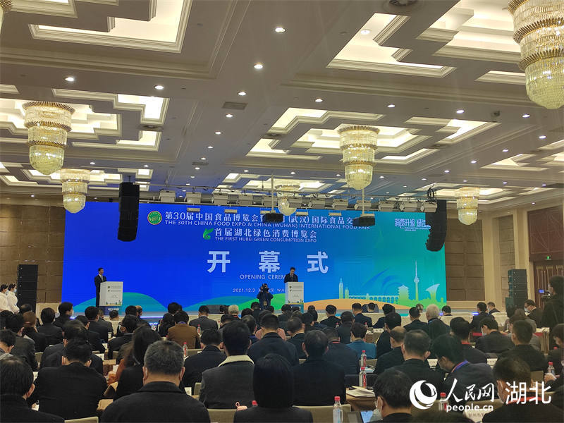

人民网南昌12月5日电 （毛思远）12月2日，江西省新余市仙女湖区河下镇平川村瓜蒌种植基地，农户忙着采摘、加工、晾晒收获的瓜蒌。近年来，新余市通过调整农产品种植结构，流转土地规模化发展瓜蒌、果冻橙、有机蔬菜、蜜橘等绿色生态农业，引领促进农业提质增效、转型升级。
人民网武汉12月4日电 （郭婷婷）围绕居民衣食住行，从实物消费到服务消费，消博会通过现场展览、品鉴、体验等方式，全面展示湖北新型消费和绿色消费发展的最新成果。12月3日，首届湖北绿色消费博览会在武汉举行。 本届消博会由湖北省商务厅、省发改委和武汉市人民政府共同主办，聚焦“消费升级 绿色崛起”主题，促进消费提质升级，推动消费绿色转型，创新引领经济高质量发展。 消博会展览总面积约5万平方米，设置智造消费、绿色住建、文旅消费、体育消费、楚菜楚茶楚酒、新能源汽车六大展区，参展企业1100多家。
